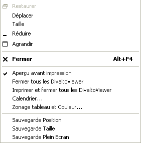

En mode client léger, voir la documentation utilisateur en ligne (au format Web) accessible depuis le menu Divalto.
Pour les applications de la version 6, l’état (position à l'écran, taille, mode "plein écran") de chaque fenêtre affichée par les applications Harmony peut être enregistré au moment de la fermeture, dans le but de retrouver ce même état à la prochaine réouverture.
Vous pouvez choisir de mettre ou non cette fonctionnalité en route, grâce à trois options du menu système des fenêtres Harmony :

Ainsi :
Si l'option Sauvegarde Position est cochée, une fenêtre sera réouverte à la position où elle se trouvait lors de sa dernière fermeture.
Si l'option Sauvegarde Taille est cochée, une fenêtre sera réouverte avec la taille qu’elle avait lors de sa dernière fermeture.
Si l'option Sauvegarde Plein écran est cochée, une fenêtre conservera le mode d’affichage ("plein écran" ou normal) qu’elle possédait à sa dernière fermeture.
Remarques :
Cette fonctionnalité est prévue par tous les programmes standard tels que les zooms (V6). Pour ce qui concerne les autres programmes d’application, ce sont leurs concepteurs qui choisissent de prévoir ou non cette fonctionnalité, programme par programme.
Les informations concernant la sauvegarde de l'état des fenêtres sont stockées dans la base de registres. Si vous désirez, pour une raison ou pour une autre, restaurer l'état initial de toutes les fenêtres V6, appelez l'utilitaire xWindowsSizeReset.